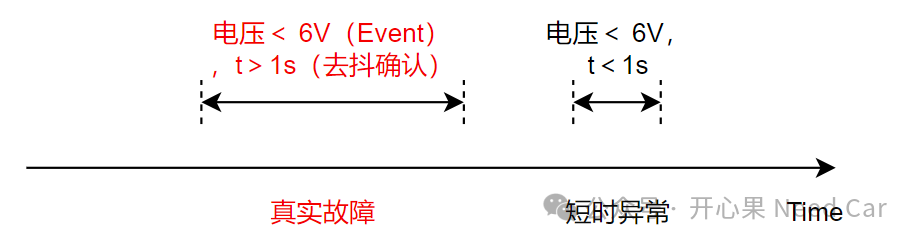
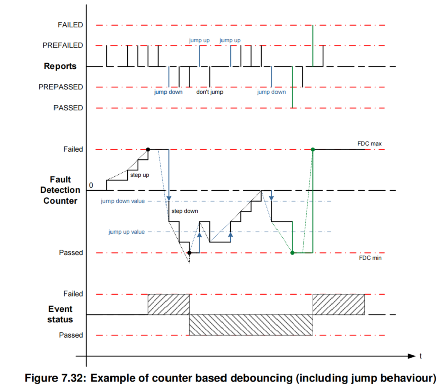
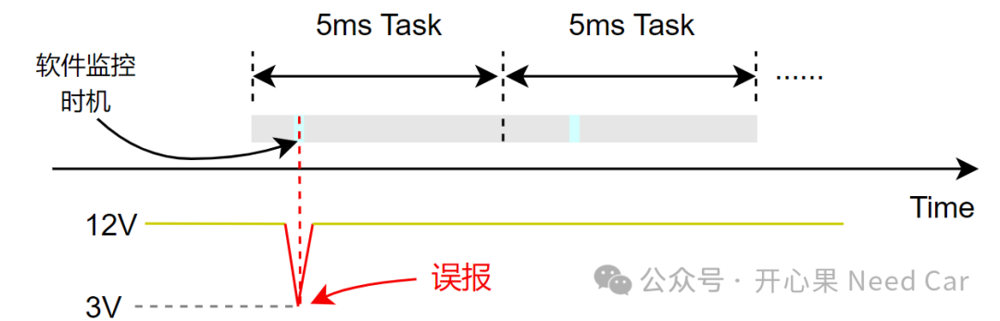
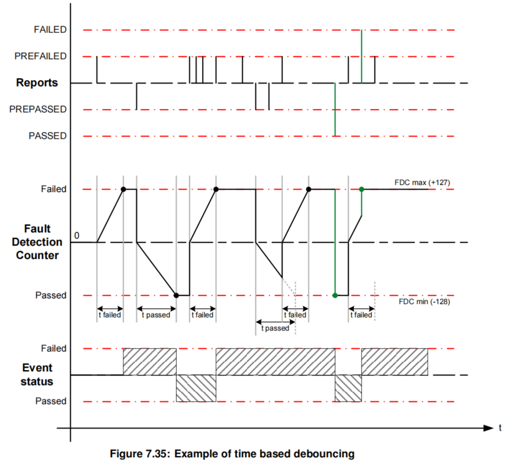

《工程问题排查模板之DTC（二）：诊断前置检查条件》一文中，我们聊了故障监控的使能条件，接下来就要聊聊如何诊断的问题，即：故障诊断的监控条件满足以后，如何准确有效地识别出故障？
讨论故障诊断，绕不开一个问题：“故障是真的发生了吗？”。车辆诊断功能是想把车辆真实的问题状态识别出来，而不是想误报故障，eg：过于敏感的监控策略使故障频繁报出。所以，为了真实地识别出车辆故障，而不是外部环境因素导致的偶发性失效，需要对监控的故障事件进行“去抖”处理。
（一）什么是去抖？
去抖的本质就是通过多次检查，识别监控对象是否偏离预期状态。eg：欠压故障（eg：＜6V）持续1s。这里的1s检测就是一种去抖手段。因为欠压这种行为在1s内持续存在，则可以认为真实发生了欠压故障，而不是某一瞬时的电压过低。如果电压因为外部环境干扰，偶发性（短暂，eg：10ms）的发生，之后又恢复了正常，并不能将这样的异常工况视为欠压故障发生，如果这样的故障都需要处理，那么，车辆的运行鲁棒性将极大的降低。真实故障和短时异常，示意如下：
在Autosar DEM（Diagnostic Event Manager）中提到了两种软件去抖策略：基于次数的去抖策略（Counter based debounce algorithm）和基于时间的去抖策略（Time based debounce algorithm）。其实，两种去抖策略可以相互转换，次数（Counter）可以由时间（Time）换算。（一）基于次数的去抖策略
基于次数的去抖如下所示：

以欠压事件（Event）监控为例，以100ms周期（频率）去查询一次电压状态，如果欠压（＜6V）事件在连续10次检查中均存在，即：100*10 = 1000ms时间内，均欠压，则认为欠压故障真实发生。此时，认为故障成熟，上报FAILED的故障状态。在DEM中，一般以FDC（Fault Detection Counter）≥127表征故障成熟。所以，在设计中，需要考录step up的大小（size），如果需要监控10次，则需要满足如下关系：step up size*10≥127。所以，不难换算：step up size≥12.7。软件设计中，一般Counter都是取整数，step up可以设置为13，13*10 = 130＞127。除了step up = 13，step up = 14可以吗？也可以。那么step up可以无限大吗？显然不可能。所以，在次数确定的情况下，还应该满足另一个关系：step up size*（10 - 1)≤127，即step up size≤14.1，既然12.7≤step up size≤14.1，且step up size需要取整，那么，step up = 13或者14均可。所以，基于次数的去抖策略中，次数（n，n＞1的整数）确定了，step up size需要满足：(127/n) ≤ step up size ≤ 127/(n-1)，如果n=1，step up size≥127。所以，step up size会计算了吗？当n=1时，也就意味着事件被检测到一次就会上报故障，所以，故障上报的会非常敏感，更容易导致误报DTC，示意如下：

假设：欠压（＜6V）事件在5ms任务中监控，由于某一瞬时的电压异常被诊断到，直接报欠压故障DTC。而实际上，电压会很快恢复，并不影响功能，实际没有必要监控的如此严苛。所以，在实际的功能开发中，应尽可能确认故障事件的监控策略，避免过于灵敏的监控导致故障。（二）基于时间的去抖策略
基于时间的去抖策略如下所示：

软件处理中，基于时间的去抖策略与基于次数的去抖策略类似。依然需要换算成次数，比如：欠压故障监控1000ms。如果监控的周期（频率）是100ms，则需要监控10次；如果监控的周期是10ms，则需要监控100次。之后再通过次数计算step up size。
（三）监控周期如何确定？
不管是基于次数的去抖策略还是基于时间的去抖策略。软件层面，都会牵扯到一个点：监控周期（频率）。说白了就是Event的检测速度，如果监控的周期越小，Event异常行为会被越快地发现。但是，每个Event都放到1ms或者5ms周期Task监控合理吗？显然不行，如此，会极大地增大CPU负担，影响软件运行的健壮性。所以，Event到底放到哪个任务监控，依赖事件本身的重要程度。如果事件会影响驾/乘人员的人身安全，那么，事件需要放在高频的任务周期中；如果事件不会影响驾/乘人员的人身安全，那么，事件最好放在低频的任务周期中，尽可能避免对车辆功能的影响。
总的来说，诊断需要遵循着"快检出，慢恢复"的宗旨，但是，具体实施需要结合被监控对象属性决定。
1、AUTOSAR_SWS_DiagnosticEventManager.pdf
点击下方关注，一起聊聊Autosar/嵌入式，如果需要，联系作者进群，给你更专业的解答